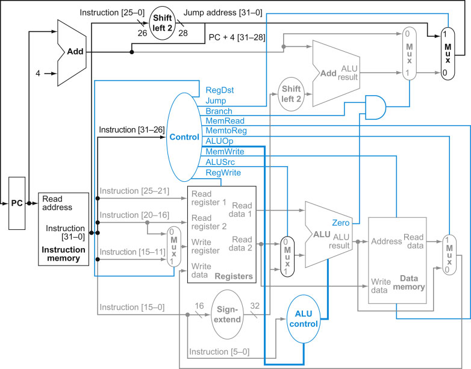
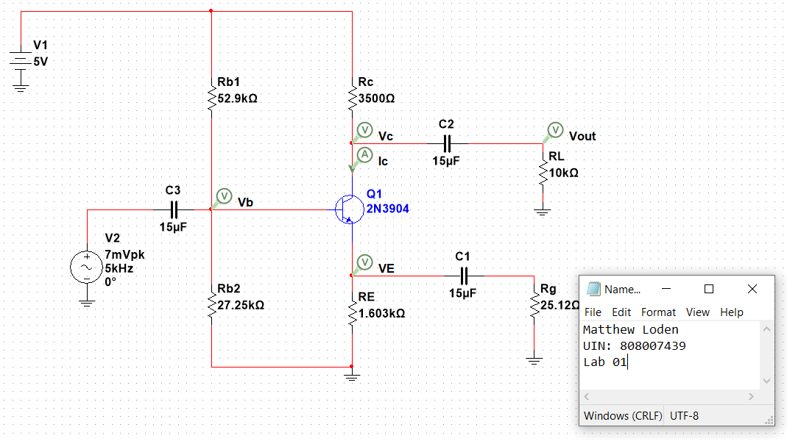

Previous Projects
In this lab design, I implemented a traffic light in an intersection between a farm road and a major highway. Using Verilog and a FPGA board, I was able to create a situation where the light gave priority to the traffic on the highway however allowed the light to change depending on information it gathered from a sensor.
In this lab design, I used several techniques learned over the course of the semester to combine several modules together to create a single cycle system that contained the ability to respond to the input instruciton. This system was able to interpert insturctions like add, subtract, and branch with other key functions of a single cycle processor.
This project incorporated teachings from networking and packet design that allowed me to transfer files from one computer to another using http and network packets.
Different circuit designs through the years of electrical engineering labs have had me create many different designs that were not singlly important enough to appear seperatly however I'll include them all here grouped together.

